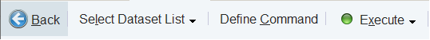
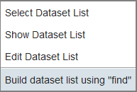
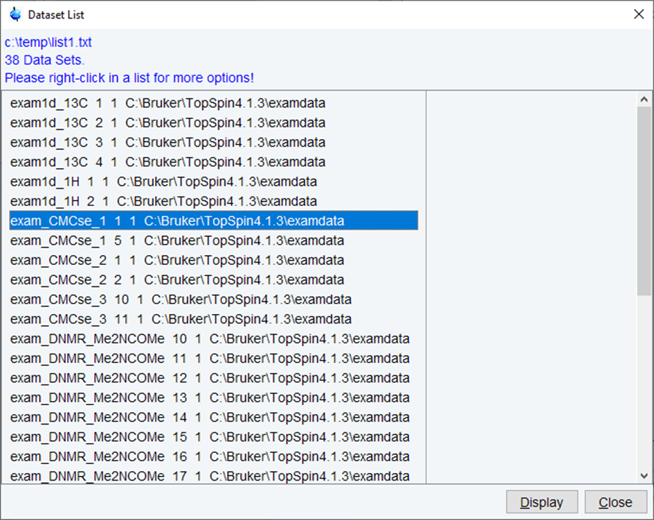

serial
NAME
serial - Serial processing with macro or Jython script
DESCRIPTION
To start serial, click Process | Advanced | Process Dataset List.
This will open the following workflow button bar.

Click Select Dataset List to choose the list of data sets on which you want to execute the series of commands. This list must have been previously created manually or can be created by clicking on the arrow key on the Select Dataset List and selecting the command Build dataset list using find.

The data set lists may be now reopened from the data list menu (Show Dataset List). The list is shown in the same window as a result of the data search.

The find command will open a dialogue window as shown below.
Enter appropriate values for the various list items to find the data sets you want to work with. A completed list may look like the one shown below. Click Define List and select Edit Dataset List.
The next step is to set up the commands for the serial command execution. Clicking Define Command will open the following dialogue box.
Enter TopSpin commands, macros, AU programs or Jython scripts here. If you want to execute several commands, they must be separated with a semicolon. Examples are:
efp
xmac <your macro name>
xpy <your jython program>
em; ft; apk; abs
Note that Jython programs are much more versatile than macros. Details on Jython programming can be found under:
Help | Manuals | Programming Manuals | Python programming
Note that serial processing can also be started as follows:
- Click File | Run A Program, then select Serial Processing and click OK.
INPUT/OUTPUT FILES
<tshome>/exp/stan/nmr/py
<tshome>/exp/stan/nmr/py/user
ser_*.py - Jython programs for serial processing
<tshome>/exp/stan/nmr/lists/mac/
<tshome>/exp/stan/nmr/lists/mac/user
ser_* - Macros for serial processing